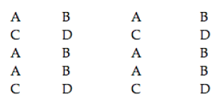

SATRANÇ TAHTASINI BOYAMAK
Bir satranç tahtasının karelerini değişik renklerle boyamanız isteniyor. Ancak tek bir şart var: Şah’ı nereye koyarsanız koyun, Şah’ın bulunduğu karenin rengi ile Şah’ın 1 hamle yaparak geçebileceği karelerden hiçbirinin rengi aynı olmayacak. Bunu sağlamak için en az kaç renk gerekmektedir?
Cevap:
En az 4 renk gereklidir; çünkü 2 x 2’lik bir satranç tahtası üzerinde, bu dört karenin herhangi birine konulan bir Şah, komşu üç kareden herhangi birine geçebilir. O halde bu 4 karenin her birinin değişik renkte olması şarttır. Bu 4 renge A, B, C, D dersek satranç tahtası aşağıdaki gibi boyanır:
